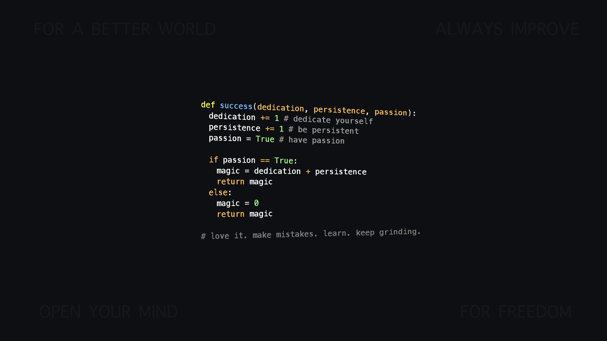

Java
Powerful language that allows you to write literally what you want.

Python
Very good choice for writing both small shell scripts and bigger programs.
Debian GNU/Linux
A very stable operating system with a good package system.
NetBSD
A portable operating system from BSD family.